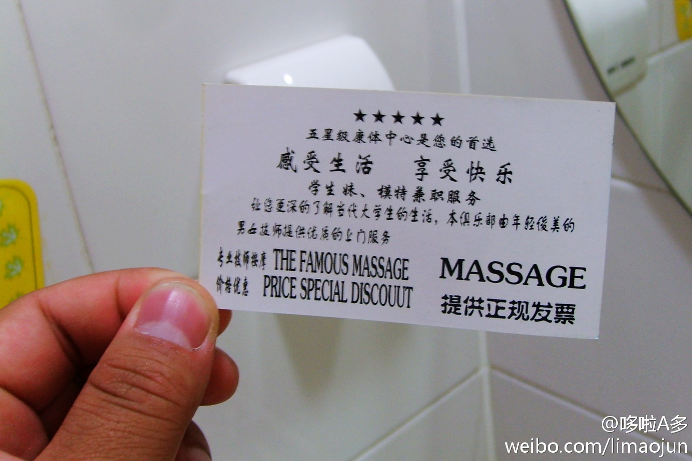
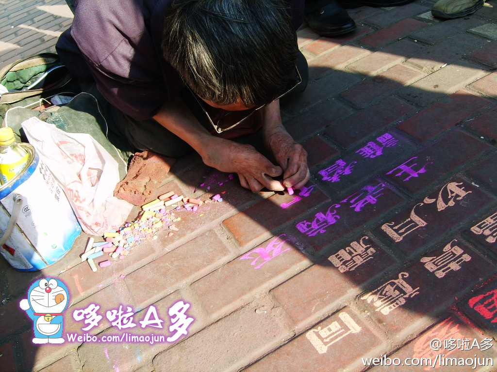

五星级康体中心是您的首选，感受生活 享受快乐，学生妹、模特兼职服务，让您更深得了解当代大学生的生活，本俱乐部由年轻俊美的男女及时提供优质的上门服务……酒店门口的小卡片太不让人淡定了。。这玩意儿一般是怎么收费的、是不是就是大保健啊～～～～ 
刚才翻看电脑里的相册看见了一张粉笔哥崔显仁早年间在哈尔滨卖艺的时候我拍的一张照片，那是2008年3月，他在地上一笔一划专心地写那些好看的粉笔字，让很多路人驻足观看。。我清楚的记得那天我也支援了他5块钱~没想到，他居然在青岛火了……还好现在他可以衣食无忧了。 